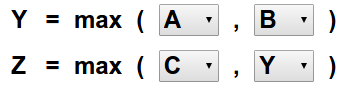
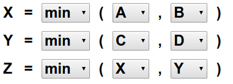

Solution
Voici une solution possible :



Attention: this version is difficult, keep it for the end.
Jenny puts stones in holes, which are marked by letters.
We can not see the number of stones that she put in each hole.
You will need function maxmin, which operates in the following way:
Example If you could see the number of stones:
Place in the hole Y X V the largestsmallest of the two numbers of stones between the number in the hole A and the number in the hole B :
The function max works in the same way but by placing the largest of the two numbers.
The function min works in the same way but by placing the smallest of the two numbers.
Construct a sequence of functions that places in the hole Z, the largest number among A, B and C. the smallest number among A, B, C and D. the second largest number among A, B and C.
Attention : Your functions must work regardless of the number of stones at the start.
Voici une solution possible :